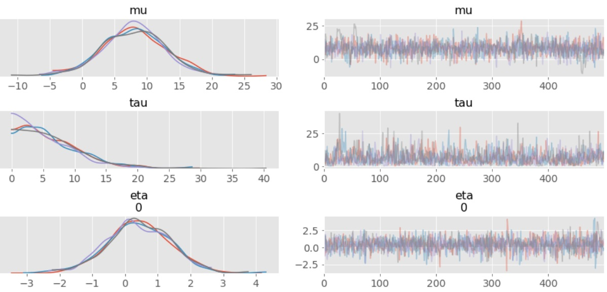

Hierarchical Model Study using PyStan

Used data from Educational Testing Service study to analyze effect of coaching to student SAT-V scores across eight high schools. Condtional posterior means of treatment effects were estimated using PySTAN
[Data Analytics and Visualization, Statistical Computing]
Industrial Engineering graduate student at Texas A&M with strong focus areas being data analytics, data visualization, cloud computing,
and database management.
Used data from Educational Testing Service study to analyze effect of coaching to student SAT-V scores across eight high schools. Condtional posterior means of treatment effects were estimated using PySTAN
Parameter Estimation of ARP's decline curve analysis model using Markov chain Monte Carlo (MCMC) method for better uncertainty quantification.
Ported functionality of zeroinfl function in R package (PSCL) that is used to perform Zero-Inflated Poisson Regression over to Python. For more details, you can visit
https://stats.idre.ucla.edu/r/dae/zip/
Similar results were achieved in Python at a comparable computational speed.
Current applications include software fault prediction and modeling the number of claims in private health insurance.
This analysis is based on the NYPD Motor Vehicle Collisions dataset (1.4 million rows, 29 variables) available here: https://data.cityofnewyork.us/Public-Safety/NYPD-Motor-Vehicle-Collisions/h9gi-nx95
The population data for different boroughs in NY was taken from here:
https://en.wikipedia.org/wiki/Boroughs_of_New_York_City
This analysis of traffic collisions in New York City focuses on factors that contribute to the likelihood of being killed or injured (hereafter referred to as a casualty) in an accident during the time period between years 2013 and 2018.
o Analyzed Data with 100,000 data points and 35 predictors having 0.72% minority class samples.
o Implemented sampling techniques such as SMOTE In order to make our skewed dataset balanced.
o Applied classification techniques like logistic, random forests, and SVM.
o Achieved close to 85% prediction accuracy for minority class with test data.
Designed a database system to keep track of customers, revenue, pizza sales to analyze the number of premium customers, most ordered pizza, customer referrals, number of employees, etc. for making key business decisions. Transitioned from conceptual design phase to actual database implementation in MySql.
Phase 1 - Conceptual design phase. Developing Entity Relationship Diagram and Relational Database Schema
Phase 2 - Extract, Transform, Load (ETL)
Phase 3 - Engage with the database and obtain relevant information through queries
In this simulation study, the The law of large numbers (LLN) and the central limit theorem (CLT) were shown to exist. Expnential distribution was used to model the waiting times between each bus until the stop has been visited by 1000 buses